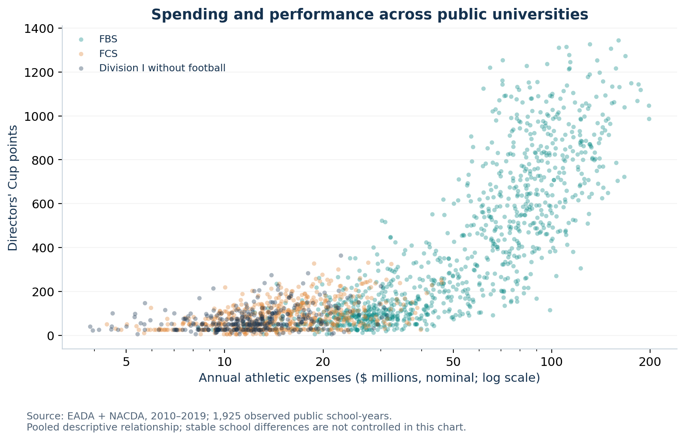
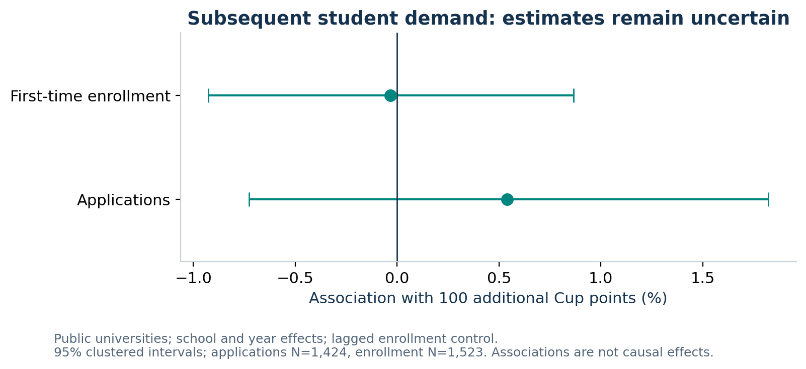
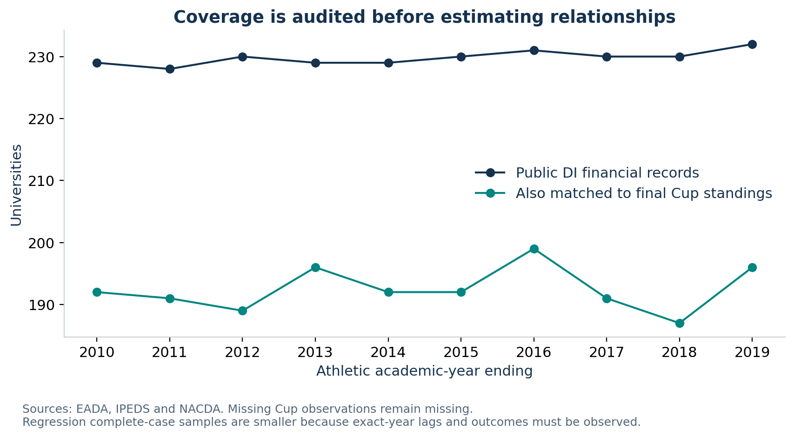
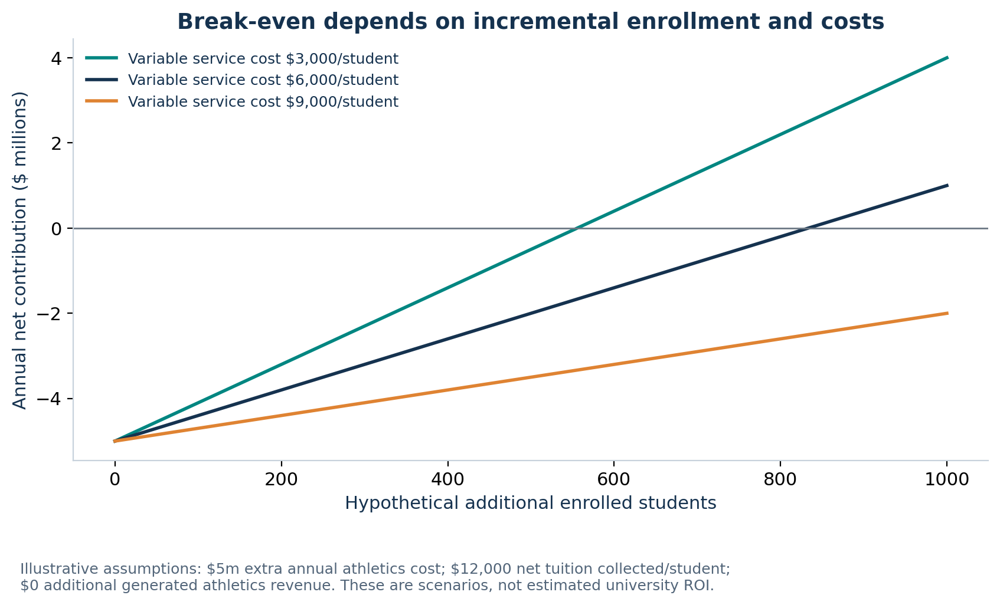
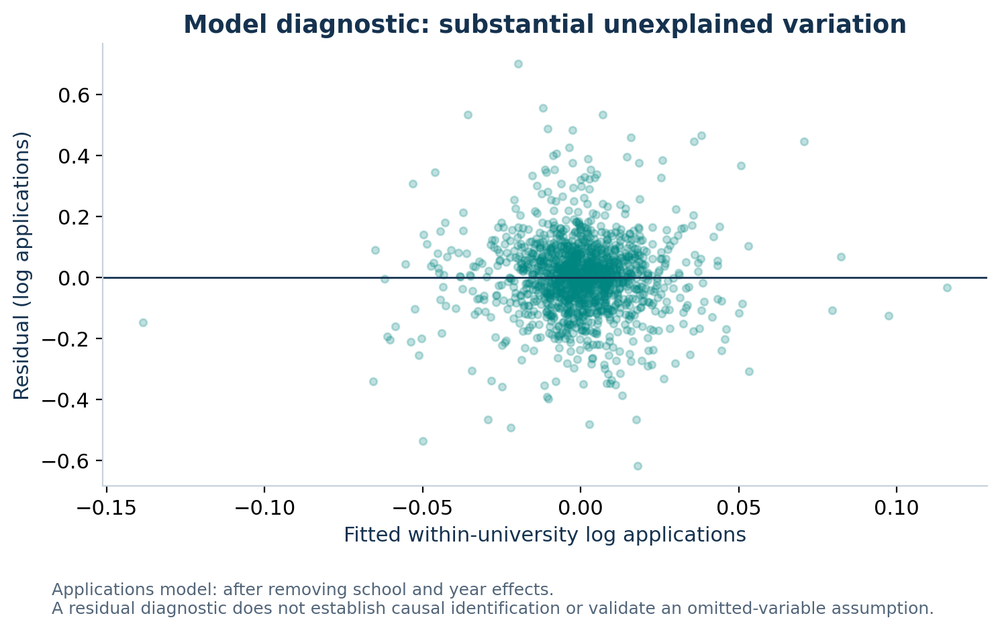
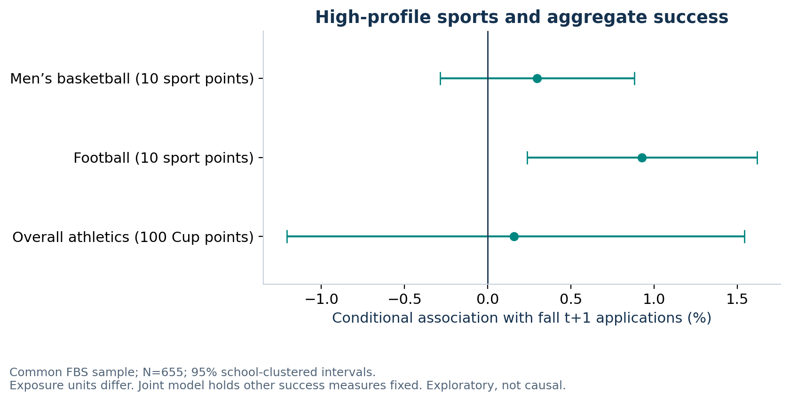

# Beyond the Scoreboard: working empirical findings
**Historical EADA-only starter:** use `FEASIBILITY_REPORT.md` for the audited Knight/ESPN financial and Flutie analysis. This page preserves the earlier public-source model results separately.
## Decision finding
This historical panel does **not establish a causal athletics spending → success → student-demand payoff**. The primary estimates have 95% confidence intervals that include zero. This does not prove there is no effect. No causal university ROI has been estimated.
## What was actually analyzed
- 3,460 EADA Division I institution-years, 2010–2019, representing 357 distinct UNITIDs. - 2,298 public institution-years; 1,925 also matched to final Directors' Cup standings. - Exact-year lags and complete-case exclusions produce the smaller model samples below. Admissions models use fall t+1 and end before the pandemic; all outcomes stop in 2019. - Every acquisition, transformation, calculation, model and chart is implemented in Python.
## Primary estimates
| Test | Association | 95% interval | p | Holm p | N | Schools | | --- | --- | --- | --- | --- | --- | --- | | spending_to_cup | +3.76 Cup points per 10% higher prior expenses | [-0.66, +8.18] points | 0.095 | 0.286 | 1723 | 224 | | cup_to_applications | +0.54% per 100 Cup points | [-0.73%, +1.82%] | 0.404 | 0.809 | 1424 | 217 | | cup_to_enrollment | -0.03% per 100 Cup points | [-0.93%, +0.87%] | 0.941 | 0.941 | 1523 | 221 |
Models include university and year effects, lagged total enrollment, and school-clustered standard errors. The spending model also controls for prior sport-participation categories. 0 of 3 primary exposure tests have unadjusted p < .05; 0 have Holm-adjusted p < .05. Intervals and p values are not probabilities that a hypothesis is true.
The pooled correlation between log expenses and Cup points is **0.806**; the raw-dollar correlation is **0.874**. These cross-university correlations should not be substituted for the within-university estimates. Wealth, program breadth and persistent reputation can explain between-school patterns.
## High-profile sports versus aggregate success
Exploratory common-sample FBS model, with all three success measures included together. Aggregate units are 100 Cup points; sport units are 10 sport-specific Cup points. These coefficients cannot be compared directly as equal increments of success.
| Measure | Coefficient (log applications) | 95% interval | p | N | Schools | | --- | --- | --- | --- | --- | --- | | cup_100 | 0.00157 | [-0.01215, 0.01529] | 0.821 | 655 | 106 | | fbs_10 | 0.00921 | [0.00237, 0.01605] | 0.009 | 655 | 106 | | mbb_10 | 0.00296 | [-0.00286, 0.00878] | 0.316 | 655 | 106 |
Sport points come from the archived fall/winter releases, which can be revised by the final spring standings. This is a visibility proxy, not regular-season win percentage. The football coefficient is conditional on overall Cup success, which itself contains football points; it describes a composition difference at fixed aggregate success, not the total effect of football. Secondary tests are exploratory and their p values are unadjusted.
## Accounting conclusions
EADA reported revenue is not subsidy-adjusted generated revenue. The secondary EADA reported-revenue regression therefore tests a different measure and cannot establish direct financial self-sufficiency. Financial model status: **expanded_proxy_results_available_see_FEASIBILITY_REPORT**. The registered 2010–2019 Knight workbook has now been acquired, joined with audited source IDs/calendars and analyzed in the separate `FEASIBILITY_REPORT.md`. Its revenue-after-support measure remains qualified by transfer/reporting definitions. This page preserves the earlier EADA estimates; it does not present them as Knight financial estimates. The original workbook and school-level financial observations remain in ignored data/private.
In the explicit hypothetical scenario, a $5m annual increase in athletics cost, no added generated athletics revenue, and $6,000 annual net contribution per extra student would require **834 additional students** to cover the cost (833.33 before rounding). The project does not identify that many students attributable to athletics. Alternative assumptions are in `return_scenarios.csv`.
## Robustness and limits
`models.csv` contains all planned estimated sensitivity models, including timing, application growth, changes in performance, expense-tail trimming, balanced Cup coverage, a pre-scoring-change restriction, and FBS/FCS/nonfootball subsamples. These exploratory comparisons are not a search for a significant result. The finding above is tied to the primary tests and is not changed by selectively choosing another model.
The Cup sample conditions on observed scorers. Financial reporting, school/system boundaries, shifting sport counts, scoring rules, imputation, admissions policy and conference changes can matter. Fixed effects do not eliminate time-varying confounding or reverse causality. University finance fields are downloaded for context; they are not used to claim a marginal tuition contribution. Post-2021 NIL/pandemic analysis, causal mediation, and a complete NPV model remain outside this starter's validated scope.
Earlier football/FPI pilot claims from the prior conversation have not been independently reproduced and are **not** evidence from this analysis.
## Review and reproduce
See `README.md`, `docs/methods.md`, `docs/sources.md`, `docs/assignment_checklist.md`, and the source/hash manifest. The final slides, five-member contributions, instructor consultation, and teammate/instructor repository invitations remain group actions.





